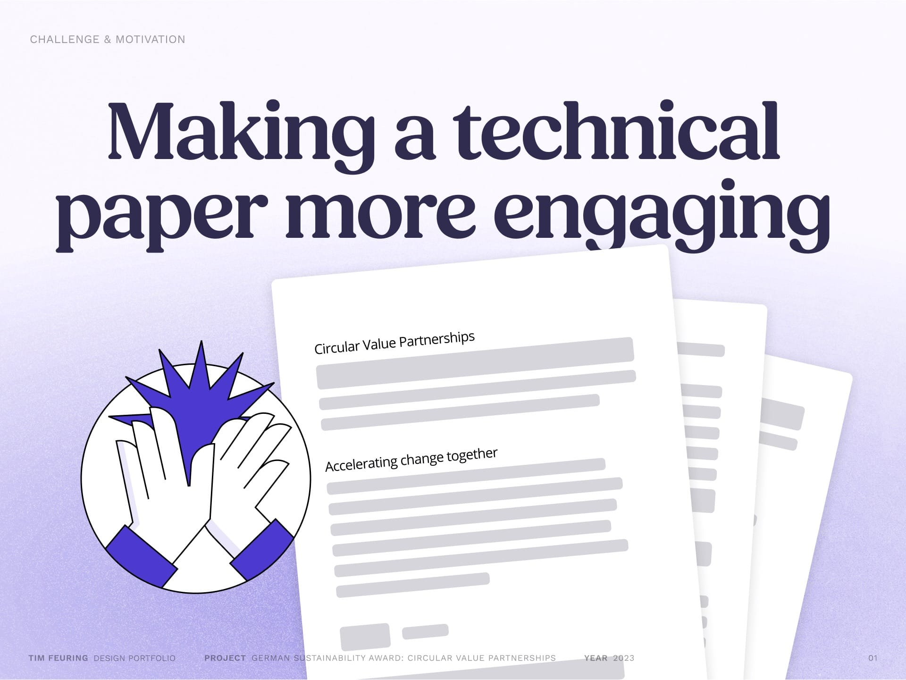
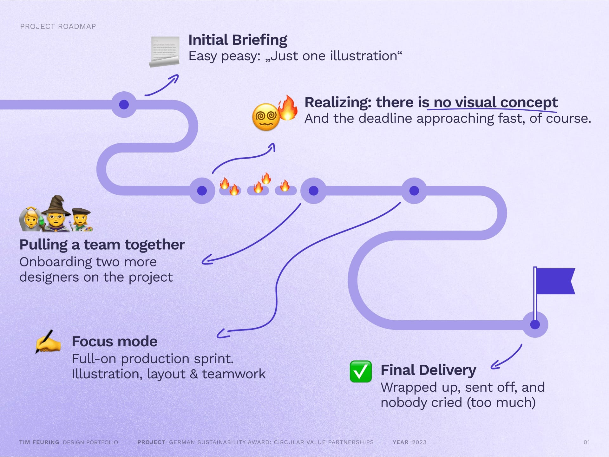
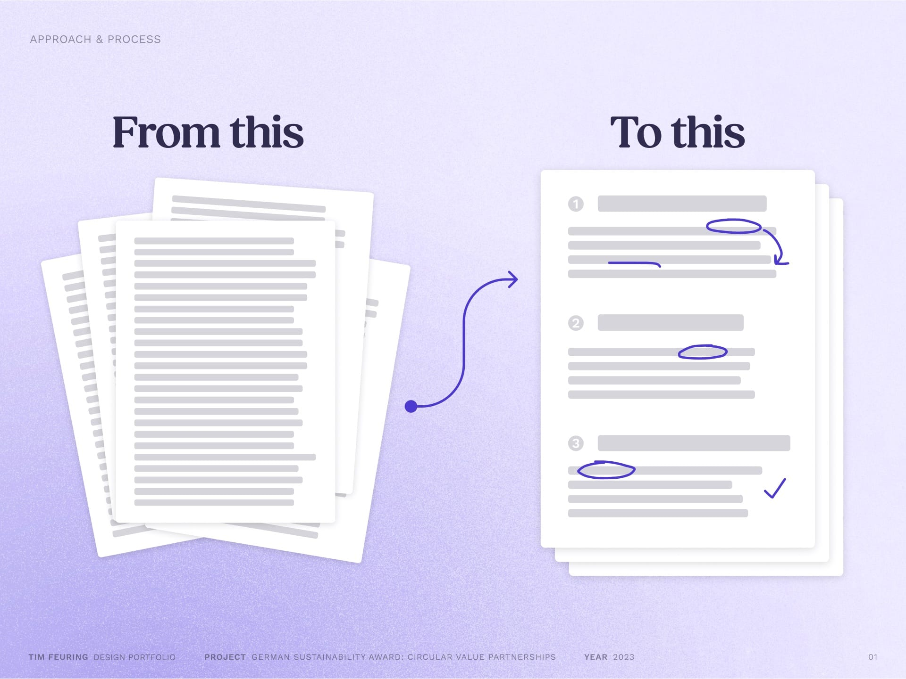
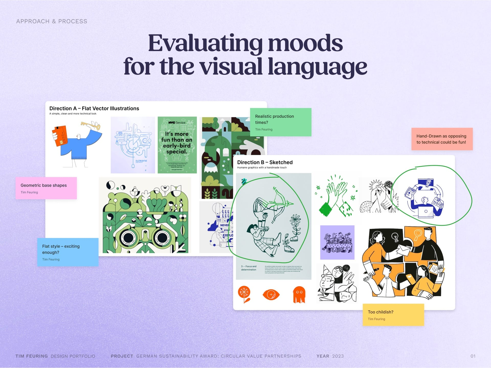
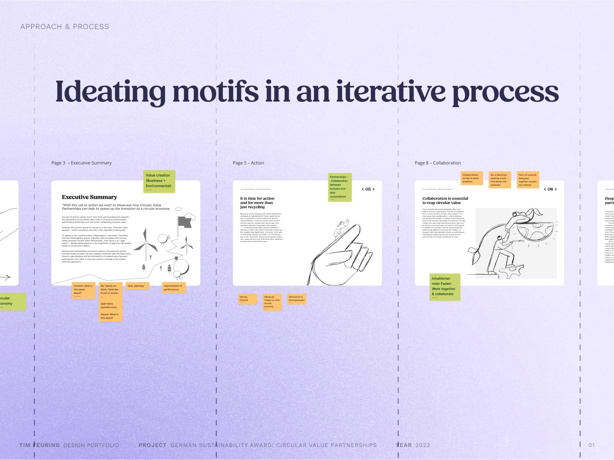
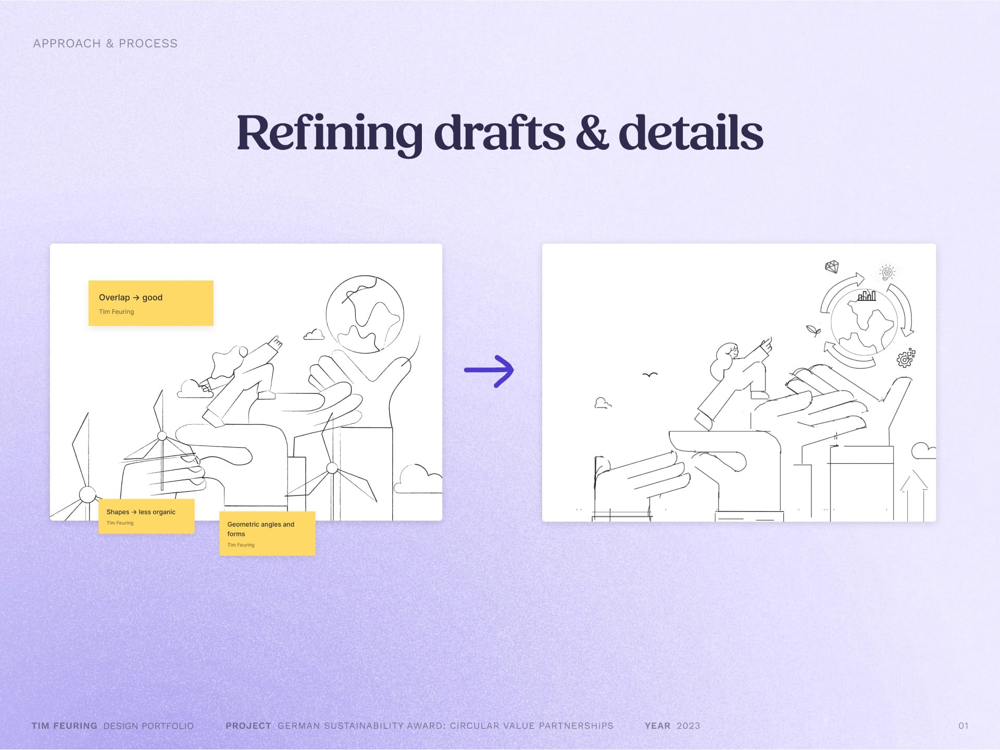
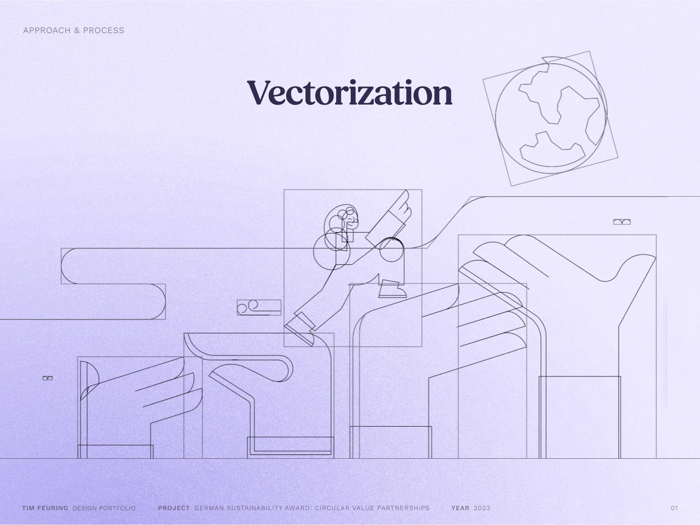
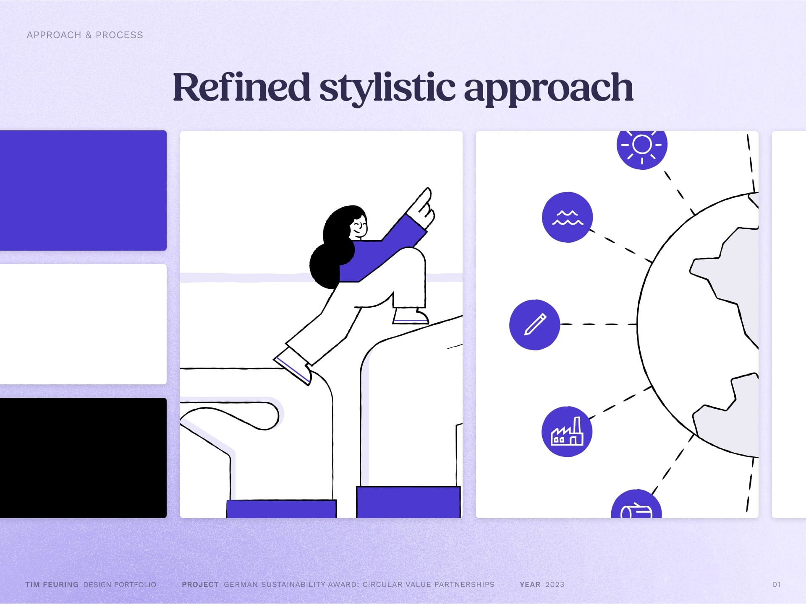
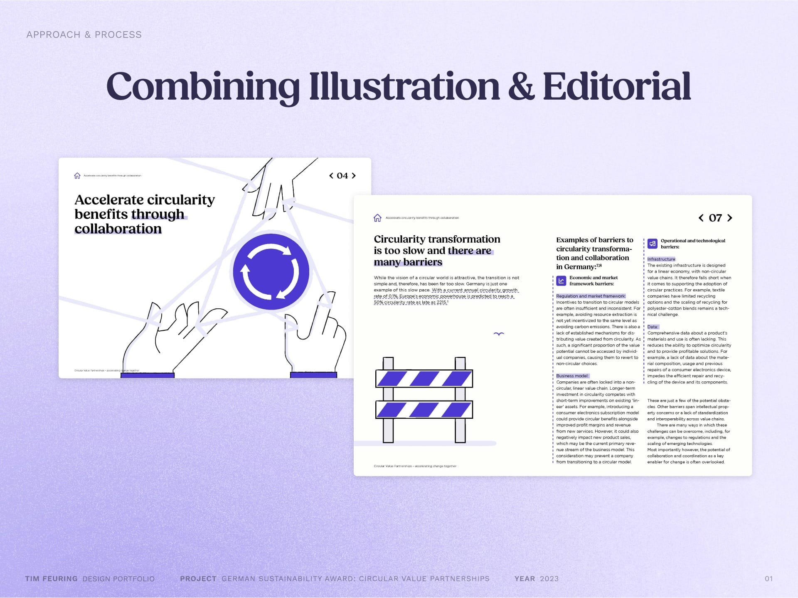

My Role
I initiated the design process and took the lead on defining the illustration style and editorial direction of the whitepaper. To support the scope of the project, I brought two additional designers on board. Together, we developed the visual identity and overall structure of the publication.

The whitepaper on Circular Value Partnerships was already in progress when a team of sustainability consultants approached us with a request for an illustration. The challenge: to enrich a technical, content-heavy publication with the illustration to make it more accessible and inviting to read.

What began as a small request quickly turned into a full visual and editorial concept. After an initial talk, it became clear the report needed more than one illustration: It lacked a cohesive design to support its complex content. With no internal design team and a 20+ pages technical report, we stepped in to create a clear, engaging visual language. From a single illustration to the complete layout, we delivered 12+ custom visuals and a fully designed whitepaper on time. A great team effort from start to finish.

To support the sustainability consultants, we followed a structured, iterative process. We started with a deep dive into the content of the whitepaper. The initial material was dense and technical, so our first step was to break it down into clear themes and visual opportunities. Through content clustering and regular exchanges with the team, we identified where visuals could support, explain, or just lighten up the reading experience. Illustrations played a key role in making abstract concepts more tangible and guiding readers.

Starting the design process, we explored a range of visual styles to find a matching visual direction for the paper. The goal was a balance between clarity and approachability, which led toward a playful but clean illustration style that feels human and accessible.

We sketched early illustration ideas directly onto the layout drafts to ideate motifs, partly with quick vector drawings, partly sketched on the tablet. This iterative process helped to align content and visuals early on and allowed room for feedback and refinement.

To bring more consistency and clarity to the visual language, we refined early sketches. While keeping the playful character, we adjusted proportions and simplified shapes to be more geometric, which led to an overall sharpened style.

The refined sketches were then built into vector graphics. This made shapes more consistent and prepared the illustrations for flexible, editable use across the layout.

Vectorized illustrations allowed us to further refine the style. Clean lines, geometric shapes, and a limited color palette with lots of whitespace and a bold violet accent ensured visual consistency across the artwork and complemented the editorial layout. To add warmth and personality, a hand-made brush stroke effect was applied to the vector illustrations, giving them a more handmade look and feel.

As a last step, the illustrations were seamlessly integrated into the editorial layout, enhancing the storytelling and guiding the reader’s attention. Careful placement and scale adjustments ensured harmony between text and visuals, creating a cohesive and engaging experience throughout the publication.